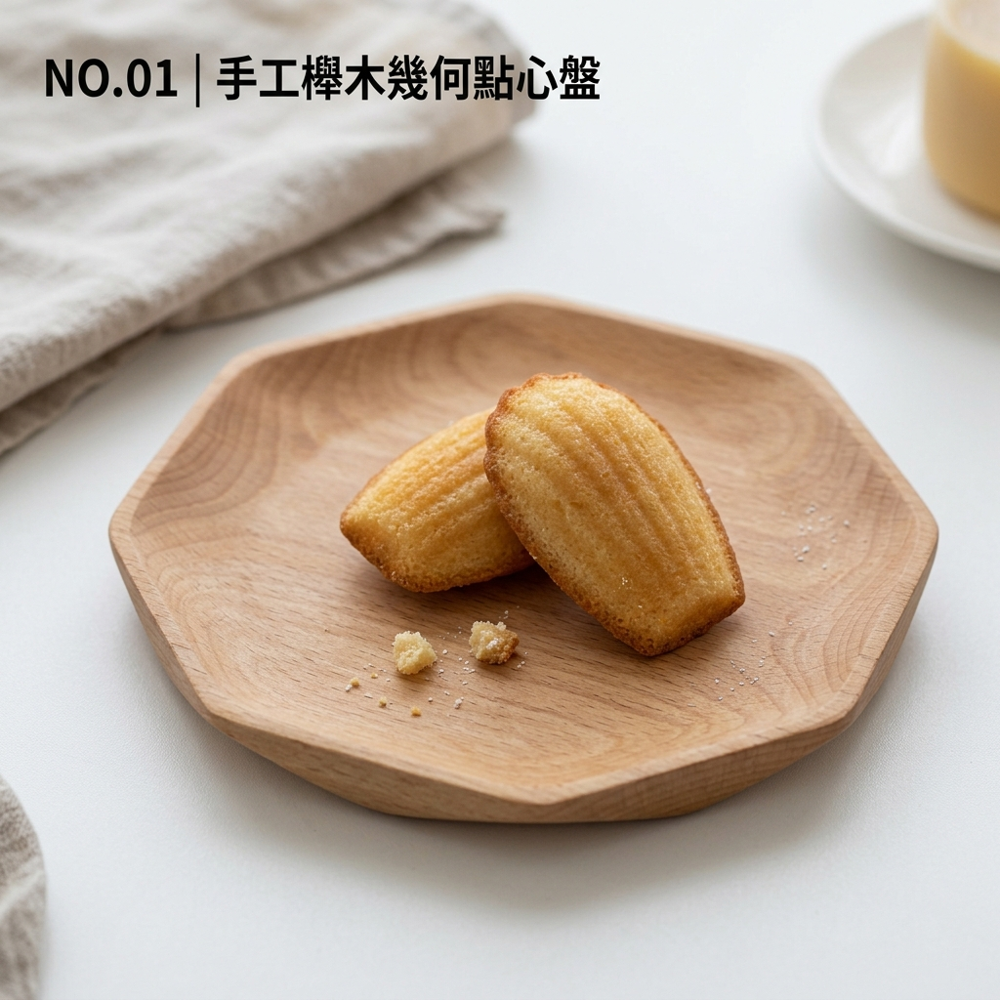
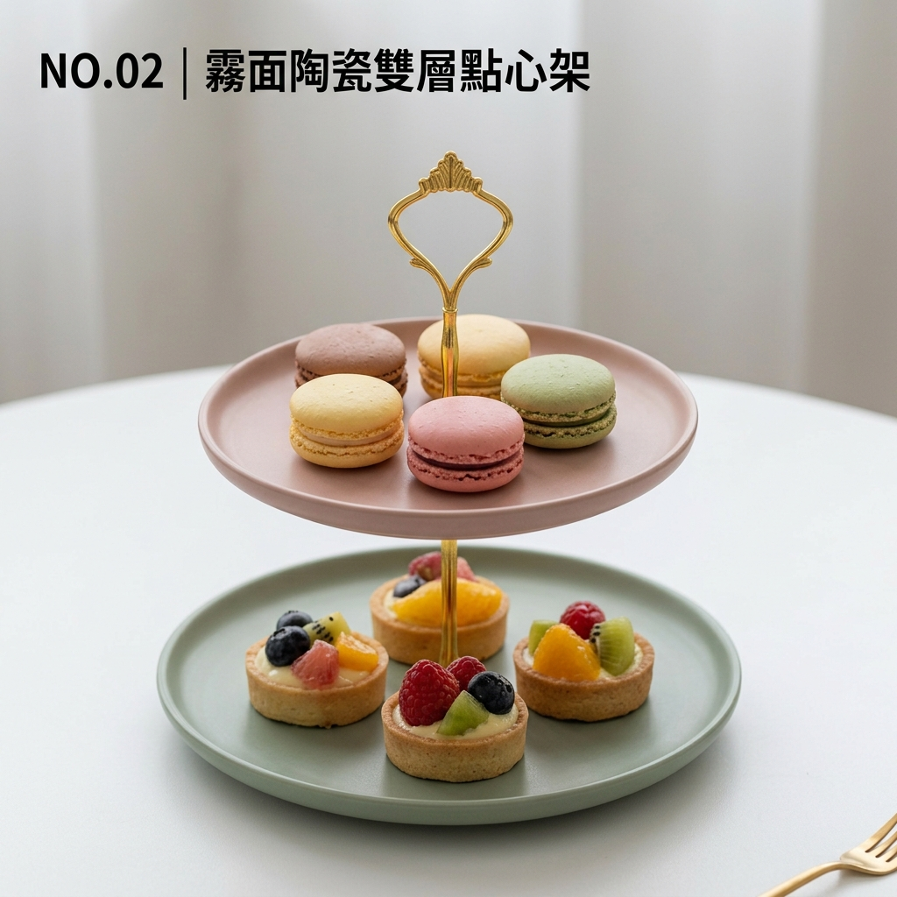
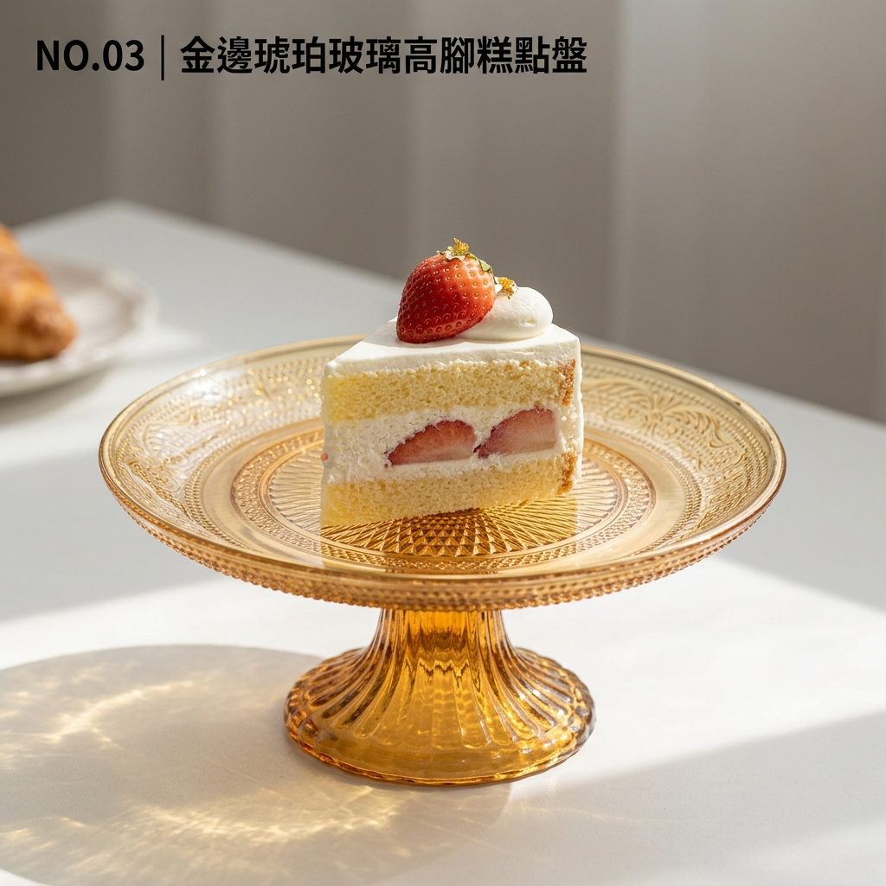
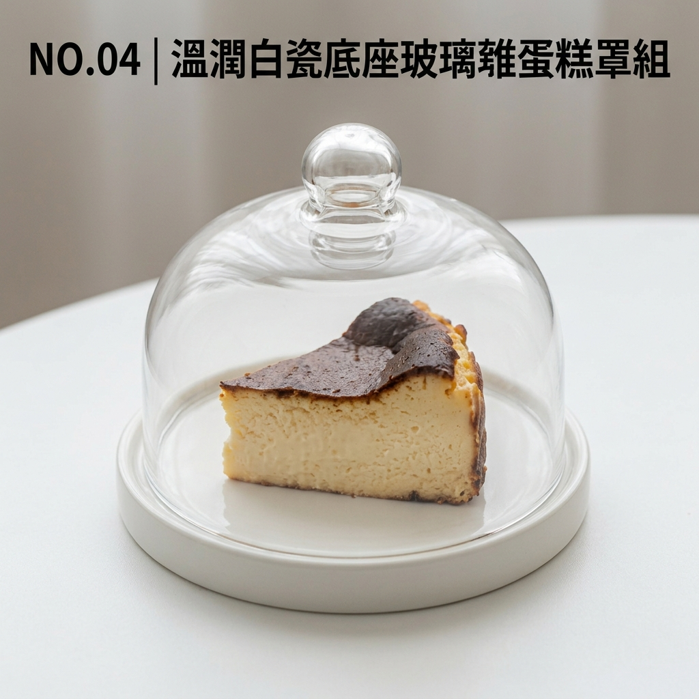
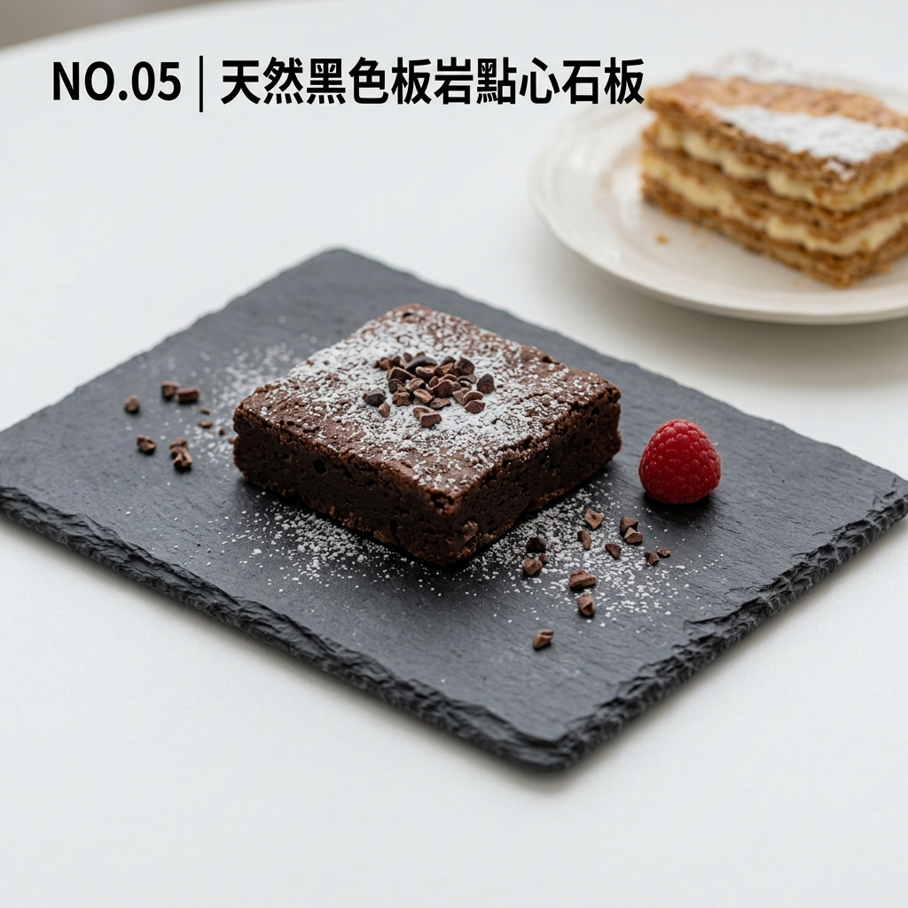
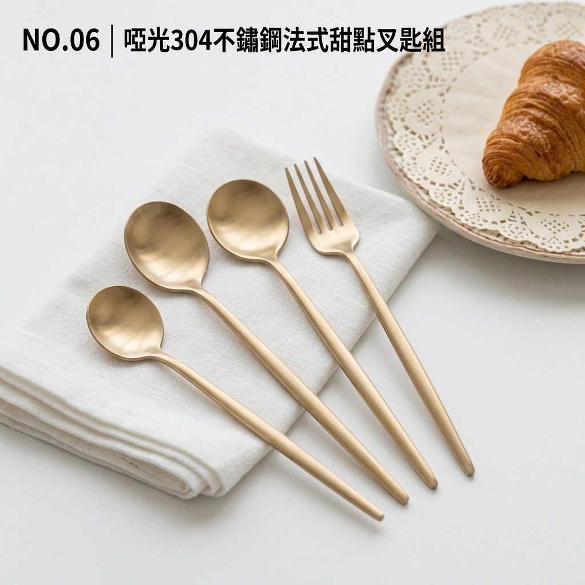
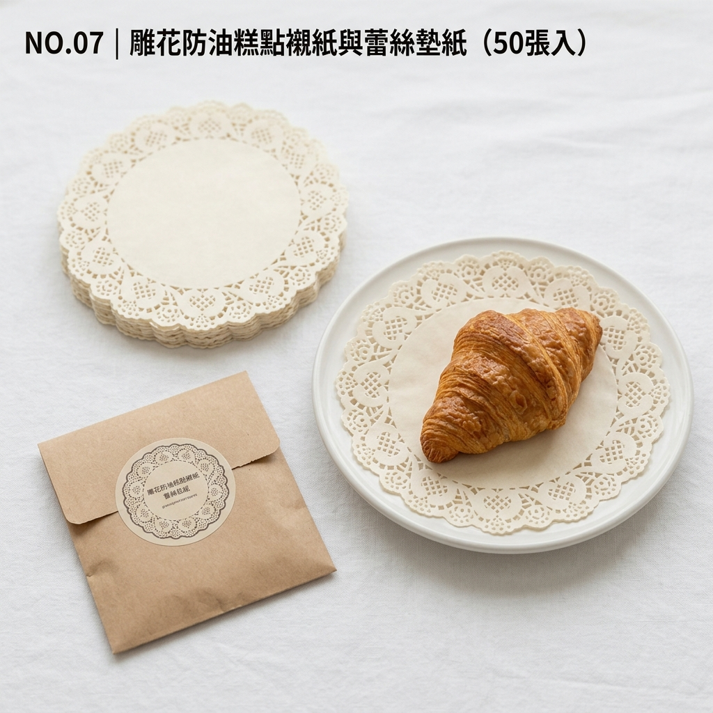
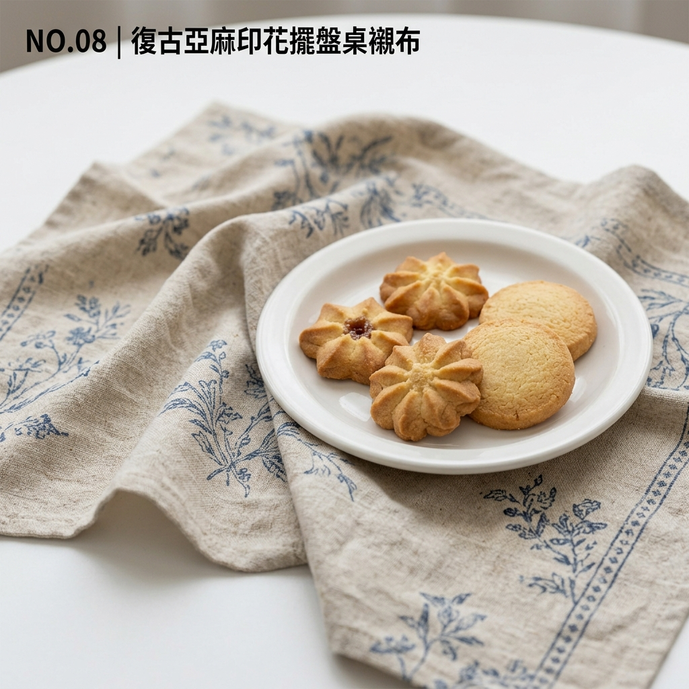
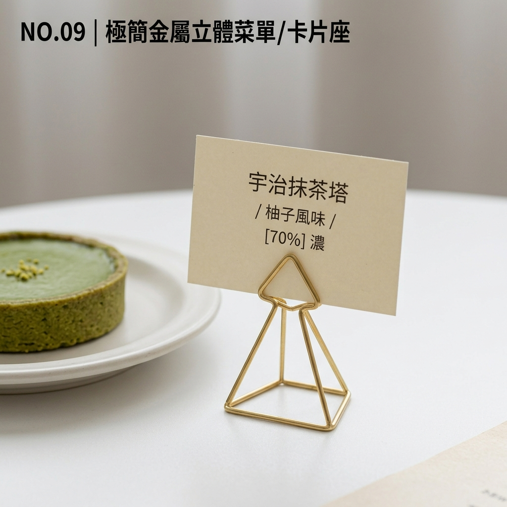
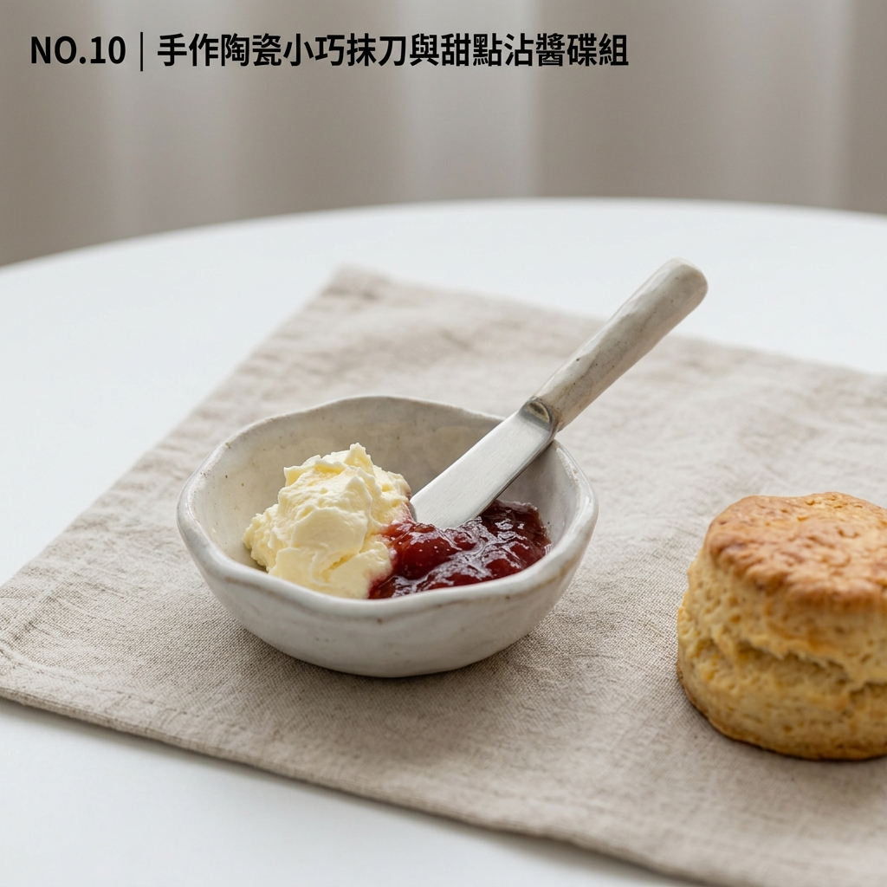

熱銷
生活穿搭
NO.01 | 手工櫸木幾何點心盤
選用整塊天然櫸木微雕，溫潤木質紋理，表面塗覆食品級大豆木蠟油，防水防油。
NT$ 680
「蛋糕趣」相信，手作甜點不單是味蕾的享受，更是情感的傳遞。
我們從材質、色彩與實用度出發，設計並蒐羅能提升生活質感的烘焙周邊與風格選物。

熱銷選用整塊天然櫸木微雕，溫潤木質紋理，表面塗覆食品級大豆木蠟油，防水防油。

莫蘭迪色系低調霧面質感，可拆卸金屬提環，輕鬆打造高低錯落的立體陳列感。

新品手工吹製復古琥珀色玻璃，邊緣描手工真金邊，復古奢華且透光度極佳。

高透光無鉛玻璃罩搭配極簡白瓷托盤，兼具衛生防塵與展示效果。

保留粗獷自然石邊，附防滑矽膠底墊，深色背景能突顯糕點明亮色彩。

人體工學流線握柄，啞光復古金/銀雙色可選，耐用且不影響甜點原味。

食品級防油矽膠紙，精細蕾絲鏤空壓花，吸油不黏著，大幅提升擺盤精緻度。

天然棉麻材質，柔和褶皺感，幾何微印花邊緣，為攝影擺盤增添層次感與溫柔基調。

黃銅精工拉絲質感，結構穩固不傾倒，專為展示甜點卡、風味說明卡設計。

不規則微瑕手感陶藝，搭配小巧奶油抹刀，優雅解決果醬與鮮奶油的呈裝需求。